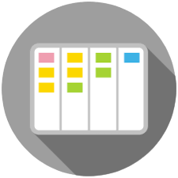
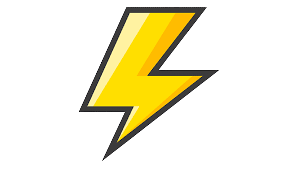

<mat-sidenav-container class="sidenav-container">
    <mat-sidenav #drawer class="sidenav" fixedInViewport
        [attr.role]="(isHandset$ | async) ? 'dialog' : 'navigation'"
        [mode]="(isHandset$ | async) ? 'over' : 'side'"
        [opened]="false"
    >
    <mat-toolbar>Menu</mat-toolbar>
    <mat-nav-list>
        <a class="v" mat-list-item (click)="drawer.close()" routerLink="/">
            
            Home
        </a>
        <a class="v" mat-list-item (click)="drawer.close()" routerLink="/login">
            
            Login
        </a>
        <a class="v" mat-list-item (click)="drawer.close()" routerLink="/kanban">
            
            Kanban Demo
        </a>
        <a class="v" mat-list-item (click)="drawer.close()" routerLink="/customers">
            
            SSR Demo
        </a>
    </mat-nav-list>
    </mat-sidenav>
    <mat-sidenav-content>
        <mat-toolbar>
            <button
                type="button"
                aria-label="Toggle sidenav"
                mat-icon-button
                (click)="drawer.toggle()"
                *ngIf="isHandset$ | async"
            >
                <mat-icon aria-label="Side nav toggle icon">menu</mat-icon>
            </button>
            <span class="logo" routerLink="/">
                
                Kanban Board
            </span>

            <span class="fill-space"></span>
            <div *ngIf="!(isHandset$ | async)">
                <a mat-button routerLink="/kanban">
                    
                    Kanban Demo
                </a>
                <a mat-button routerLink="/customers">
                    
                    SSR Demo
                </a>

                <a mat-button routerLink="/login">
                    
                    Login
                </a>
            </div>

            <button mat-icon-button [matMenuTriggerFor]="menu">
                <mat-icon>more_vert</mat-icon>
            </button>

            <mat-menu #menu="matMenu">
                <a class="v" mat-menu-item href="https://github.com/mrin2810">
                    
                    <span>Checkout Github</span>
                </a>
                <a class="v" mat-menu-item href="https://www.linkedin.com/login">
                    
                    <span>Checkout LinkedIn</span>
                </a>
                <a class="v" mat-menu-item href="https://www.youtube.com/">
                   
                    <span>Checkout Youtube</span>
                </a>
            </mat-menu>
        </mat-toolbar>
        <ng-content></ng-content>
    </mat-sidenav-content>
</mat-sidenav-container>